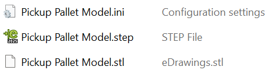
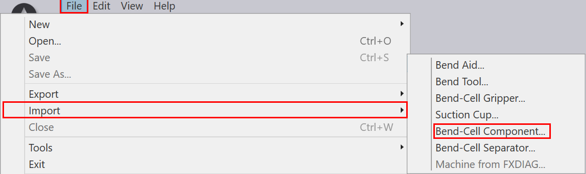
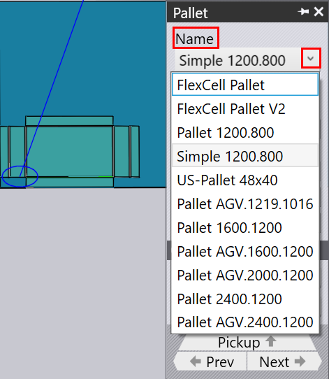

Setting up Cell Components
Cell components like pickup pallet, deposit pallet etc can also be customized as per the user requirements. The components can be created in a CAD software and imported into the FluxRobot CAM as STL or STEP files. The following section explains the process of importing the created cell components into the FluxRobot CAM.
Creating Cell Components
The cell components can be created in any CAD software. The created component must be saved as a STEP file.
Folder Structure for Cell Component
Create a folder with the respective cell component name. The created cell component folder must have the following files:
| All the files must have the same name as the cell component name. |

-
STEP file: The 3D model of the cell component in STEP format.
-
INI file: The configuration file in INI format. This file has to be created by the user. The INI file must contain:
-
The "Type=Pallet" for the system to treat it as a pallet.
-
The Xmin/Ymin and Xmax/Ymax values indicating the boundary areas.
-
The "Z" value indicating the height of the cell component.
-
Importing Cell Components into FluxRobot CAM
The created cell component can be imported into the FluxRobot CAM by following the steps below:
-
In the FluxRobot CAM, go to File → Import → Bend Cell Components → select and import the STL or STEP file.

-
The imported cell component will be available in the database.
-
Click the cell component. For example, if the pickup pallet is imported, click on "Pickup Pallet", in the pallet panel’s "Name" dropdown, select the imported pickup pallet.

-
Once the cell component is imported, remove the default cell component by clicking on the it → click "Remove".
-
Calibrate the newly imported cell component as per the instructions given in the PInR and PInM section of the documentation.